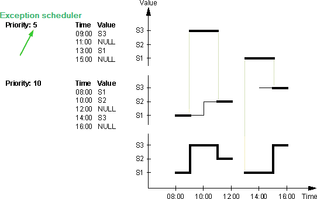
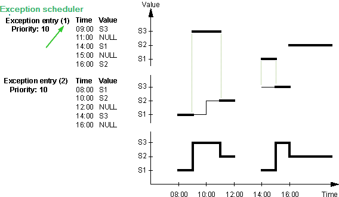
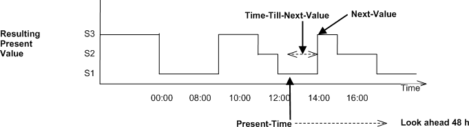

Schedule (Schedule)
The "Scheduler" (Schedule) object type defines a standardized object whose properties define the schedule functionality.
Schedule supports HQ or RC property templates. A property template contains the generic configuration values for a schedule. The property template can be saved or loaded: BACnet objects editor > Inspector window > Properties > Configuration.
Note: Duplicate entries are not allowed for the same time. If you make a new duplicate entry or add a duplicate entry for the existing entry, you will get an error message.

BACnet scheduler repeats every minute the current command (command with specific priority or relinquish command).
✳ Indicates a Siemens proprietary property.
Schedule object properties are:
Present value |
|
|
|---|---|---|
'Present value' indicates the present value of the virtual variable. | ||
Property ID: 85 | ||
Effective period |
|
| ||
|---|---|---|---|---|
"Effective period" indicates the time when the scheduler program is active. | ||||
Name | Value | Description | ||
|
|
| ||
2021-04-03 | If the present date is within the specified start and end date range, the scheduler program is active. If the present date is outside the specified start and end date range, the scheduler program is not active (e.g. present value = the last value when scheduler program was active). | |||
 BACnetDateRange
BACnetDateRange SttD
SttDWeekly scheduler |
|
| ||
|---|---|---|---|---|
"Weekly scheduler" contains one daily schedule for each weekday (Monday through Sunday). Exception days (exception scheduler) at higher priority overwrites the weekly scheduler. | ||||
Name | Value | Description | ||
| 7 | 7 daily schedules (Monday through Sunday), consisting up to 20 switching commands. | ||
|
| Daily schedule. | ||
| ||||
Value | Null value | "NULL" releases the current switching command value in the daily schedule. The default value of the scheduler becomes active. | ||
Value | Boolean value |
| ||
Value | Unsigned value | “Unsigned value” to command multistate objects. | ||
Value | Real value | “Real value” to command analog object. | ||
Value | Enumerated value | “Enumerated value” to command binary objects. | ||
 BACnetDailySchedule
BACnetDailySchedule Values
Values
All non NULL values used in Weekly scheduler and Exception scheduler, the Schedule default value, and all values of the List of object property references have to be of the same data type and will determine the datatype of Present value.
Exception scheduler |
|
| ||
|---|---|---|---|---|
"Exception scheduler" includes all exception day entries. The highest switching priority (i.e. the lowest number) applies in the event of multiple, valid exceptions.  The first switching entry has priority in the event of multiple exceptions at the same priority.  | ||||
Name | Value | Description | ||
| 0..48 | Up to 48 exception day entries, consisting of a period, values and priority. | ||
|
| Exception day entry. | ||
| ||||
| Calendar value |
| ||
CalendarEntry | Single date | The exception day is active on a particular date. | ||
*-*-*-1 | Each Monday | |||
CalendarEntry | Date range | The exception day is active during a date range. | ||
2017-04-02 | If the present date is within the specified start and end date range, the present day is an exception day. | |||
CalendarEntry | Weekday | The exception day is active on a particular weekday. | ||
July, Third, Tuesday | Tuesday in the third week of July. | |||
| Reference value | The exception day is active as defined in the calendar reference. | ||
Date and time formats are not based on the Windows regional settings. On the automation station, date entries are always limited to the value range of 01.01.1970 to 31.12.2037. | ||||
| ||||
| 0..20 | Up to 20 switching commands. | ||
BACnetTimeValue |
| Each switching command entry consists of a switching time and command. | ||
| ||||
Value | Null value | "NULL" releases the current switching command value in the daily schedule. The default value of the scheduler becomes active. | ||
Value | Boolean value |
| ||
Value | Unsigned value | “Unsigned value” to command multistate objects. | ||
Value | Real value | “Real value” to command analog object. | ||
Value | Enumerated value | “Enumerated value” to command binary objects. | ||
| ||||
| 1..16 | Priority of all switching commands on the exception day. | ||
 Prio
Prio Reference value
Reference valueSchedule default value |
|
| ||
|---|---|---|---|---|
The default value applies:
The present day is outside of the effective period. | ||||
Name | Value | Description | ||
| Null value | "NULL" releases the current switching command value in the daily schedule. The default value of the scheduler becomes active. | ||
| Boolean value |
| ||
| Unsigned value | “Unsigned value” to command multistate objects. | ||
| Real value | “Real value” to command analog object. | ||
| Enumerated value | “Enumerated value” to command binary objects. | ||
List of object property references |
|
| ||
|---|---|---|---|---|
"List of object property references" writes changed switching values together with priorities to the reference list below. | ||||
Name | Value | Description | ||
| 0..16 | Up to 16 BACnet objects. | ||
| Unassigned | BACnet object identifier. | ||
| Present value | Target property. | ||
| 65535 |
| ||
| Unassigned |
| ||
| ~ |
| ||
Priority for writing |
|
| |
|---|---|---|---|
"Priority for writing" indicates priority for writing as well as schedule value as commanded in the priority array of the referenced BACnet object properties (List of object) | |||
Priority 2: Safety priority enable. | Use priority 2, 5, 14 for referenced objects with a priority array. | ||
Priority 16 | Use priority 16 for referenced object without priority array. | ||
Priorities 1, 4, 6, 7, 15 | Illegal priorities. | ||
Priorities 3, 9 to 13 | Not used. | ||
State flag ✳ |
|
|
|---|---|---|
"State flag" represents four boolean flags ("Out of service", "Overridden", "Fault", "In-Alarm") that indicate the general status of an object. | ||
Reliability |
|
|
|---|---|---|
'Reliability' indicates whether the property value 'Present value' is reliable. If the 'Present value' is not reliable, the property 'Reliability' indicates the cause of the fault and the bit "Fault" of the state indication is set to 'True'. In a normal case, the property 'Reliability' is set to "No fault". | ||
Property ID: 103 | ||
Out of service |
|
|
|---|---|---|
"Out of service" allows decoupling the object from being modified by a control program, system program or peripheral device.
| ||
Property ID: 81 | ||
Next value |
|
|
|---|---|---|
"Next value" indicates the next value and the time until the schedule object schedules the next value.  | ||
Time to next value ✳ |
|
|
|---|---|---|
Next value and the time till the next value will be scheduled by the schedule object. | ||
Object access level ✳ |
|
| ||
|---|---|---|---|---|
"Object access level" defines the instance-specific object access level. "Object access level" is used for generic filtering and processing an object by a client application.
| ||||
Access level | Name | Description | ||
7 | Basic operation | Access to BACnet objects and properties for a room user e.g. data points visible on a room unit. | ||
6 | Standard operation | Access to BACnet objects and properties for standard operation and monitoring (daily business), .e.g. room and plant information on a management station. | ||
5 | Extended operation | Access to BACnet objects and properties for extended operation and monitoring such as network and device objects. All I/Os are visible | ||
4 | Administrator | Not used by HQ solutions yet. | ||
3 | Basic service | Access to BACnet objects and properties used for commissioning, e.g. configuration value extensions, I/O extensions, etc. | ||
2 | Extended service | Not used by HQ solutions yet. | ||
1 | Internal | Access to all BACnet objects and properties for very specialized actions e.g. during development. | ||
Object usage ✳ |
|
|
|---|---|---|
"Object usage" indicates whether the object is used or unused. The "Object usage" property can hide or display respective objects and their functionality in a client. For example, room functionality can be marked for flexible room arrangements as used/unused. An object that is marked as unused behaves as if the object does not exist. | ||
Property ID: 4930 | ||
Description |
|
|
|---|---|---|
"Description" is a string of printable characters whose content is not restricted. | ||
Object identifier |
|
|
|---|---|---|
"Object identifier" is a numeric code that is used to identify the object. It must be unique internetwork-wide. | ||
Object name |
|
|
|---|---|---|
"Object name" represents a name for the object that is unique internetwork-wide. The minimum length of the string is one character. The set of characters used in the "Object name" are restricted to printable characters. | ||
Object type |
|
|
|---|---|---|
"Object type " indicates membership in a particular object type class. E.g. "Analog input", "Binary output", "Event enrollment", "Trend log", etc. | ||
Building automation profile ✳ |
|
|
|---|---|---|
"Building automation profile" is an enumeration that indicates a particular type of Siemens proprietary object. Siemens objects are based on standard BACnet objects. For example, Siemens Analog Input, Analog Output, Analog Calculated Value, and Analog Configuration Value are based on standard Analog Input, Analog Output, and Analog Value BACnet objects. | ||
Profile name |
|
|
|---|---|---|
"Profile name" indicates the name of an object profile to which this object conforms. To ensure uniqueness, a profile name must begin with a vendor identifier code followed by a dash. All subsequent characters are administered by the organization registered with that vendor identifier code. The vendor identifier code that prefixes the profile name indicates the organization that publishes and maintains the profile document named by the remainder of the profile name. | ||
Comment |
|---|
A string of printable characters whose content is not restricted. (property is only used in ABT Pro) |
Version |
|---|
Version of a copied object (copied from a library). (property is only used in ABT Pro) |
Library reference |
|---|
Source of a copied object (copied from a library). (property is only used in ABT Pro) |